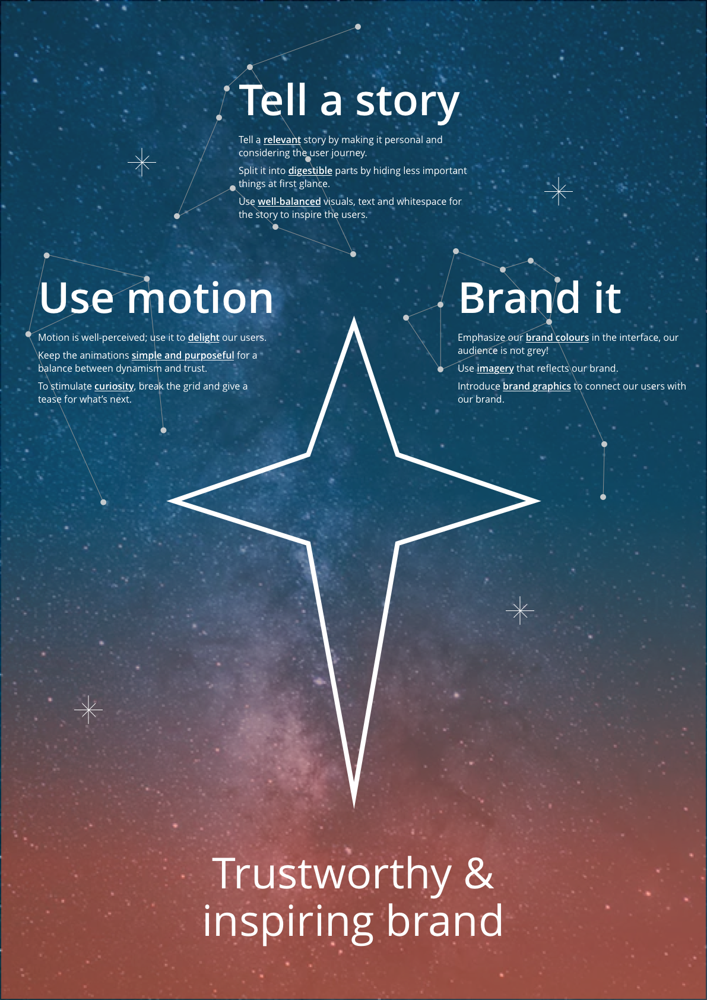

When wanting to inspect an interface and detect the baseline usability problems that should be fixed before user testing begins.
It's also useful to test the design principles and directions with experts, to support/test our design choices. At Studyportals we do design critic sessions (around once a month) to asses our products.
1. Ask three to five UX-designers trained on the heuristics, to individually assess a product by walking through a core set of tasks and noting the places where the heuristics are not met in the product;
2. Ask the evaluators to combine their findings together in a single report of issues that should be addressed.
- Provides quick and relatively inexpensive feedback early in the design process;
- Gives suggestions to designers on the best corrective measures;
- The report also includes the positive findings, so people stay motivated;
- There are platforms that facilitate the finding of experts and do the heuristic evaluation online (although this can also be expensive).
- Multiple UX designers with knowledge and experience with the heuristics are needed (around 5) to combine their results, which can be expensive;
- More minor issues and fewer major issues are usually identified.
1. Empathy:
- Understand user needs and know business objectives;
- Empathise with our users;
- Collaborate with your peers.
2. Clarity & Efficiency:
- Focus on the relationships between items;
- Create transparency;
- Avoid unnecessary friction;
- The experience is universal.
3. Consistency:
- Aim for consistent interfaces;
- Look for similarity in wording;
- Value the brand identity.
4. Beauty:
- There is never a second chance for a first impression;
- Honour the details;
- Delight our users.
We have some rules of thumb setup by the DOT team for design direction: 